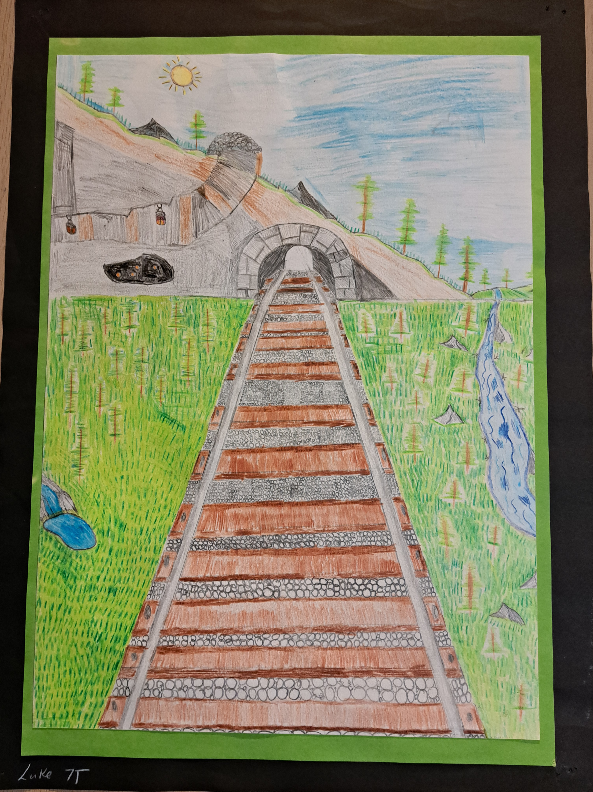
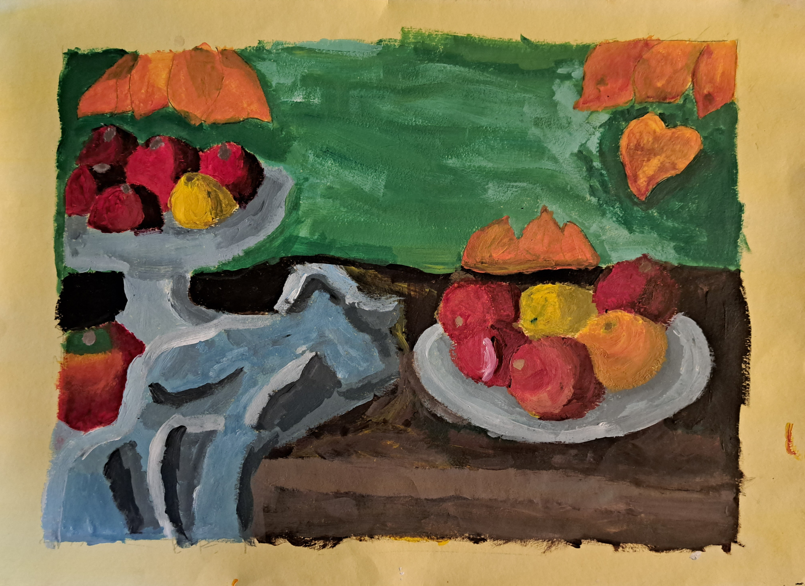
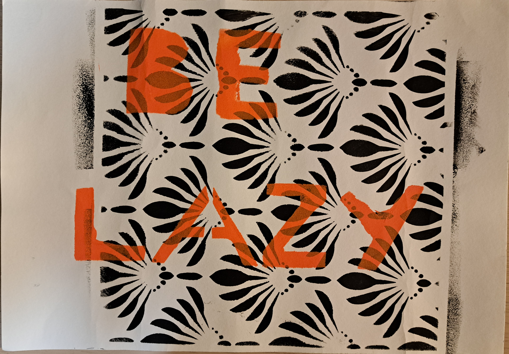
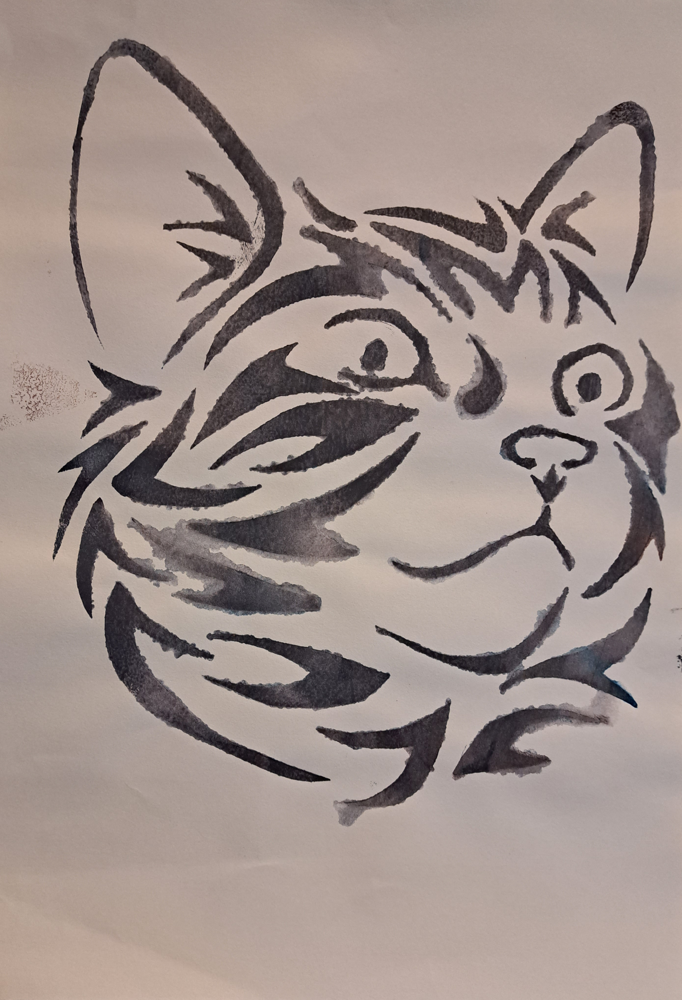
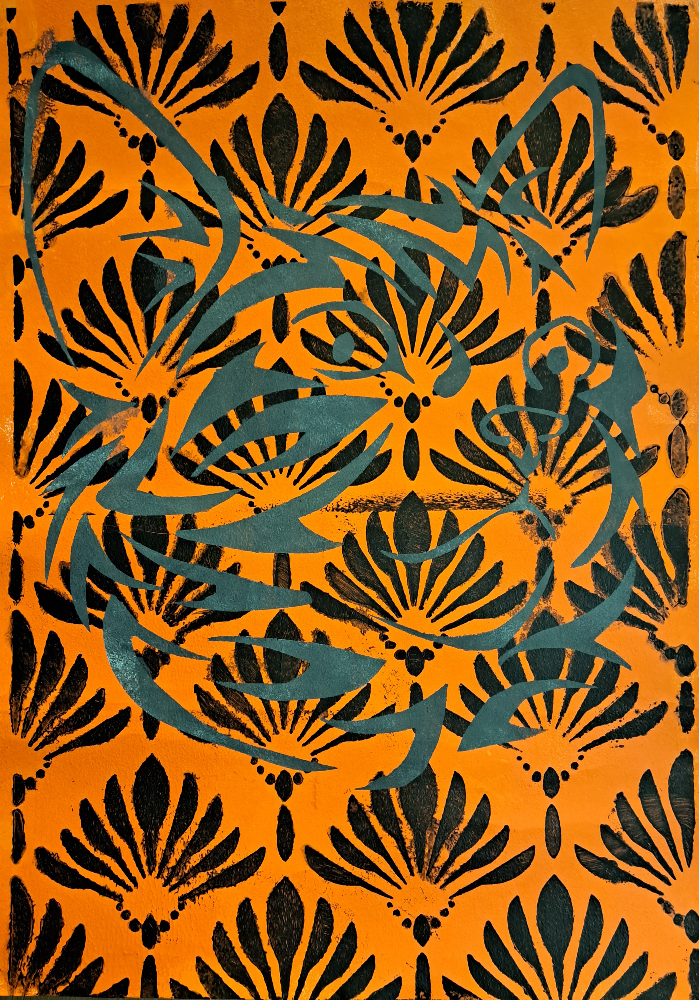
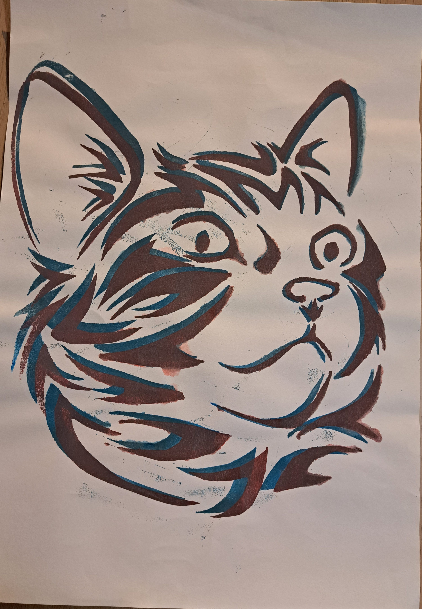
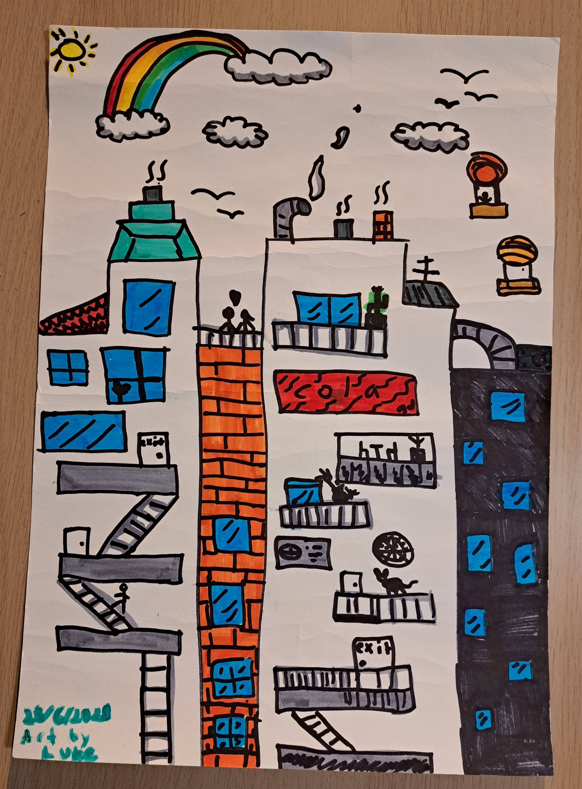
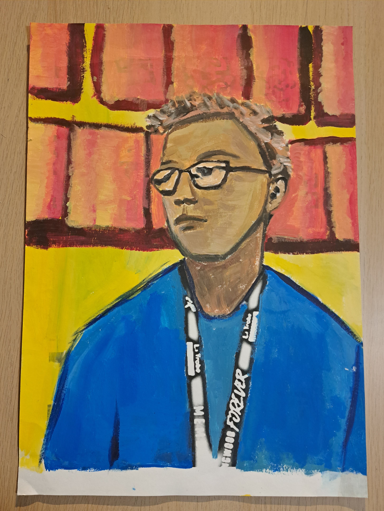
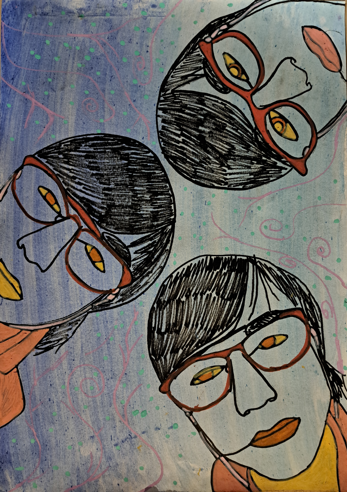
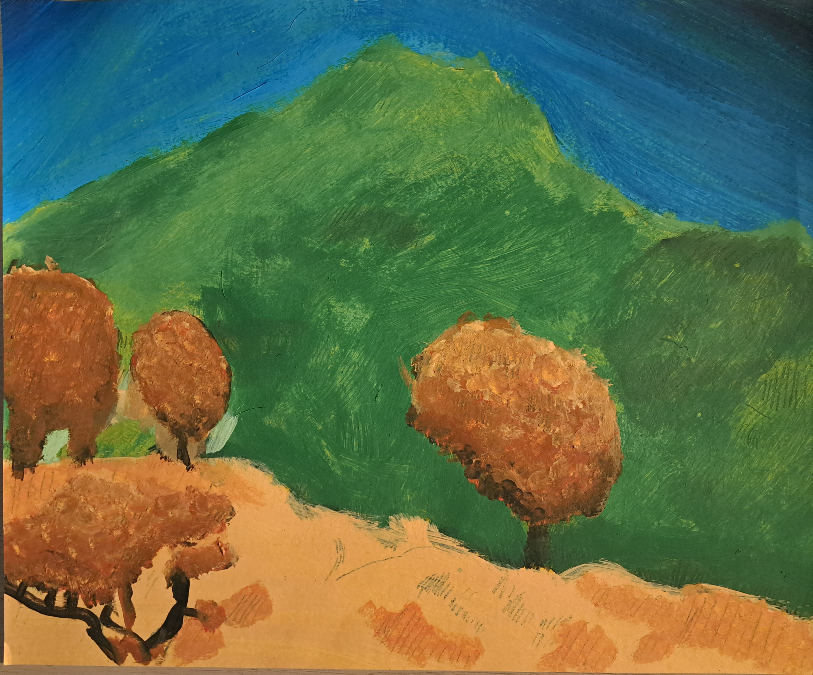

Year 7

Artwork Name: One Point Perspective Train Track Drawing
Created: 2019
Medium: Coloured pencils
Description: I started creating this artwork by first getting an A3 sheet of paper and drawing a horzion line near the upper third part of the page, I then drew a vanishing point near the centre of that ine and started drawing the outline for the train track with a greylead pencil and a ruler. After drawing the outlines I added more lines to the track to distinguish the wood planks from the metal rails, I then drew the outline of the mountain and tunnel. After that, I made the mountain looked like it was cut in half, as I throught it would look cool. I then added a mineshraft, trees and rocks to the mountain as well as a small cave with eyes. I also drew a river, more trees, more rocks and a waterfall dotted around the sides of the track. Next I added gravel to the track that got smaller the further away it got and extened the track into the tunnel a little bit, finally I then coloured in the grass, sky and the train track.

Artwork Name: A Painting Of Fruits
Created: 2019
Medium: Paint on paper
Description: I created this artwork by first getting a yellow sheet of paper and looking at a reference image, I then recreated it by drawing the outlines of everything and started painting the table with brown paint. After that, I painted the metal plate, bowl and fruits, I painted these by painting the different shades in a circular formation, so that it looked like the light was shining onto one side of the objects. After that, I then painted the cloth, I found it difficult to paint the light and texture properly on the cloth, as I found it hard to see the shadows, and to create the same colours that were on the cloth in the reference image, so I just attempted to make them and quickly colour it, but it didn't end up looking any good. Finally I painted in the leaves and background.
Year 9
   
Artwork Name: Stencil cats and Be Lazy poster.
Created: 2021
Medium: Paper stencil and paint
Description: I created the 'Be lazy' poster by first getting a piece of paper, a box cutter, a pre-cut patterned paper and black and orange paint, I then planned out what font and text I wanted to put on the poster.Next I put the patterned piece of paper on top of a plain piece of paper and rolled black paint over it with a paint roller, so that the paint would go through the holes within the patterned paper and print onto the other one underneath, this then became the background of my poster. Finally, I drew the words on a separate piece of paper and cut them out using a box cutter, then put that piece of paper on top of the one with the background and painted over it with orange paint to print the words onto the poster.

Artwork Name: A Doodle Of An Apartment Building
Created: 2021
Medium: Coloured markers on paper.
Description: I did this one time near the end of one of my art classes as I had finished all my work. I first started this artwork by drawing the outline of the buildings and the other details in greylead pencil, then I went over everything with a black permanent marker and coloured it in.

Artwork Name: Self portrait
Created: 2021
Medium: Paint
Description: For this artwork, I first took a self portrait of myself, then it got printed out onto an A3 piece of paper and got some different colours of paint I wanted to use in my self portrait. Then I painted over the top of the image, starting with the blue for the shirt, then my head and face in differemt shades of brown, and the yellow, with red and orange squares for the background. I painted my face with those colours because at first I wanted to paimt with regular skin tones colours, but I couldn't mix the right colours to create the ones I wanted, so I decided to just use browns instead.
Year 10

Artwork Name: One-line self portrait
Created: 2022
Medium: paint and coloured markers
Description: I created this artwork by first getting a photo taken of myself and printing it out, then got a piece of paper and painted a light-blue to purple wash over the whole page to be used as the background. After that, I then covered the back side of my photo in lead from a greylead pencil and placed the photo on top of the other piece of paper with the lead side facing towards the paper. I then traced over the top of my face with a greylead pencil, so that it would push the lead that was on the back of the photo onto the other piece of paper. I then repeated these steps two more times in random spots on the page, then went over the lines with a black marker and coloured in my face posca markers. Finally, I then added some spirally lines and dots all over the background of the artwork to add more colour.

Artwork Name: Mountain in the distence
Created: 2022
Medium: Paint
Description: I created this artwork by first looking at a reference image, and getting paint, brushes and a piece of paper, then I did a yellow wash over the whole page and painted the outline of the hill in foreground and the mountain in the background. Next I coloured in the sky by transitioning from a light-ish blue to a dark blue the further out from the mountain the light got. After that, I then painted in the hill and the trees with different yellows and oranges, I painted the leaves on the trees by using a small, round brush, then lightly dotting paint around near the branches of the trees. Finally I painted the whole mountain in with different shades of greens.
Year 11

Artwork Name: Charlie Brown Clay Bust Sculpture
Created: 7/02/2023
Medium: Polymer clay, foil.
Description: I started making this sculpture by first getting polymer clay and some tools to carve out the clay, Then I rolled some clay into a ball for the head and added more clay on the bottom of the head to shape it into a handle like shape, that was atteched to the head as the neck. Next, I made the body by rolling up another ball of clay, then hollowed out the middle and put a hole through the bottom of it. After that, I put the head through the hole and sculpted the clay, so that the head and body stayed connected together, then I added a bit of foil in the hollowed out body and covered it up with more clay. After I finished the base scalpture, I then added a few extra details by carving in the eyes and mouth for the face and the zigzag pattern on the shirt, I also added a little bit of extra clay for the ears, nose, hair, and shirt collar. Once I completed the full scalpture, I then put it in the oven so the clay would harden.

Artwork Name: Octopus Clay Sculpture
Created: 11/02/2023
Medium: Modroc, wire, aluminum foil, and masking tape.
Description: I started making this sculpture by first gathering some wire, aluminum foil and masking tape, I then rolled up some foil into a medium sized ball and put 8 pieces of wires around it, one at a time, taping them to the ball as I go. After that, I started adding masking tape all the way around the wires and ball, then I added the first layer of modroc and waited for it to dry. Finally, I added a second layer of modroc and waited for it to dry.

Artwork Name: Portal and Mushroom Island Sculpture.
Created: 26/03/2023
Medium: Mixed media
Description: I started creating this artwork by planning out the shape of the island by spilling a bunch of buttons over a piece of paper and drawing around the shape that the buttons made up on the paper, I did this a few times until I got the base shape I wanted. I then got a big slab of wood and put the piece of paper on it, then traced it onto the wood using a greylead pencil and cut the shape of the base out of the wood using a saw, I then sanded it until it was smooth on all sides.
After that, I started adding the beach by rolling up some foil and squishing it into a slopped shape, then I used masking tape and taped the foil around the whole edge of the island. When I finished adding the foil around the edge, I then put two layers of Modroc on top of the foil for more structural support. I then waited for the layers to dry before adding one additional layer over the top part of the base, so that it would keep the Modroc around the edge in place. Once all the Modroc dried, my mum then made a carry base for it, so it would be easier for me to carry it to and from school while working on it.
Next, I made the portal with 2 embroidery hoops stuck together with some small wood cylinders glued in between the hoops for the structural support of the portal, I then added wire, foil, and masking tape, in that order, around the cyliners on the edge of the portal for more structural support. Before finishing the portal, I made 10 rocks and mushrooms out of air-dry clay to put on top of the island and painted them. I then made some trees by cutting up some more wood cyliners to use as the tree trunks and made poms-poms for the leaves, after that I attached the cyliners to the poms-poms and surrounded them with brown crepe paper to make it look like tree bark, I then repeated this process for the trees until I had 10 of them. Once all of the props were made, I planned where they would go on the island, then added a roll of fake grass on the top of the base and added primer to the modroc and painted it yellow, I then glued sand all around the edge of the island.
I then got the portal and started building out the “rocks” that go near the bottom on each side of the portal. I first rolled up some aluminium foil and flattened it to make a small base, then I rolled up 2 balls of foil and taped them to the flat foil base with masking tape. Once I did that, I stuck it to the left side of the portal with more masking tape, I then created one more on the other side by rolling up foil a little bit before squishing it into the side of the portal to mould the foil to the right shape, then I rolled out 2 more balls of foil and stacked them on top of the other foil that I squished, after that I tape them all to the left side of the portal.
I finished building out the edge of the portal more, then I covered the whole thing in foil before rolling out the polymer clay and flattening it to make it easier to put around the portal. After that, I put the polymer clay all the way around the portal and sculpted it. When I finished sculpting the clay, one of my teachers then put the portal into the oven to bake the clay for me during class, so I don’t know what temperature the oven was set at or for how long. Once the clay was finished baking, I then took it out of the oven and painted a coat of gesso on it to help keep the paint from flaking off the clay while painting it.
After that, I then painted the portal in a light grey as a base coat before adding a darker grey and sliver to make the portal look rockier and to give it more contrast. I wanted to have a backdrop for the inside part of the portal, so I decided to go outside and take photos of the clouds in the sky. After taking some photos, I selected my favourite and printed it out, then I laminated and cut it to the shape of the portal and stuck it to the back of the portal using a hot glue gun. After that I painted the parts where you could see the hot glue to blend it in with the rest of the portal and painted the part of the exposed hoop in gold to make it look more noticeable.
Once I finished the portal, I then got some of the rocks, trees and mushrooms and put all of them including the portal onto the base and did some quick mock up test of where to put everything before gluing them to the base. After that, I glued everything to the island and glued some stretched out cotton to the inside of the portal, to make it look like there are clouds floating out of the portal. Last-but-not-least I glued a small pink Cadillac toy car to the inside of the portal to make it look like it’s driving out of the portal.

Artwork Name: untitled
Created: 6/06/2023
Medium: Acrylic paints
Description: I created this artwork by first going around my neighbourhood and taking photos of streets, shopfronts, and houses to find what I wanted to use as the subject matter within my own artwork. I decided to choose an image where you could see the street, shopfronts and houses all in one image, as I thought it looked really nice and could be cool to paint as the subject matter. Once I had the subject matter, I set up my canvas and started painting a green outline for all the buildings and objects within the photo onto the canvas. While I was painting in the lines, I felt it was a bit confusing to find where was the right spot to put them was, so I did some of them, then one of my teachers helped me with painting the rest of the outlines and a little bit with the green wash as well.
After they were finished, I then painted a green wash in some of the darker spots within the painting and started adding the base colours for some of the path and buildings, I also started painting in the clouds in the sky. I started adding more colours to the other stuff within the environment and begun to paint in the leaves for the trees, I then cleaned up some of the edges around the overhang of the shopfronts and the foot path. Next, I worked on adding colour to the grass, the rest of the road, the brick fence, and the shopfronts. After that, I added more texture to the road, bench, and the footpath, I also made the sky look brighter and added small black lines to the overhang of the shopfronts to give more detail and to make it look more like corrugated metal. I also added the poles and wire lines.

Artwork Name: Sky Island Screen Printings
Created: 2023
Medium: Screen Printing
Description: For this artwork, we had someone some Troppo Prints come to our class and teach us how to make Sceen prints.I first started by finding drawings of sky islands in one of my books that I wanted to use as the design for my screen print, then I enlarged them and printed them out. Next I cut them out and stuck them onto a piece of paper, then traced them with a black permanent marker onto acatate. After that the person from Troppo prints took all of the designs everyone made back to the studio to make a screen out of them. A few weeks later we went to visit their studio and put our designs onto shirts and tote bags.
I started this process by taking the screen that had my design on it, then attached it to a machine called a carousel, it was attached by a clamp on the end of a metal arm, it also had a platform underneath the screen for where you put the material you want to print on. After that, I then put a green shirt on to the platform and lowered the screen, so that it was hovering just above the shirt, then I put black ink on top, in the middle of the screen, and used a squeegee to push the ink through the screen and onto the shirt. Once I printed the design onto the shirt, I used a hair blower to dry the ink, then I used a iron to heat treat the ink for 2 minutes, so that it would stay on the shirt even after washing it. Finally I then repeated all of these steps for all the other items; one tote bag, a blue shirt and a jacket.